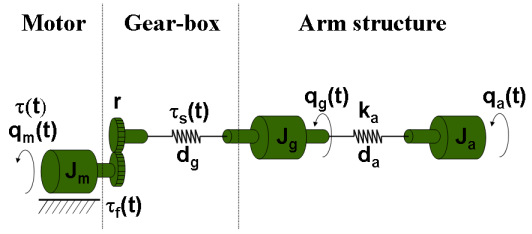
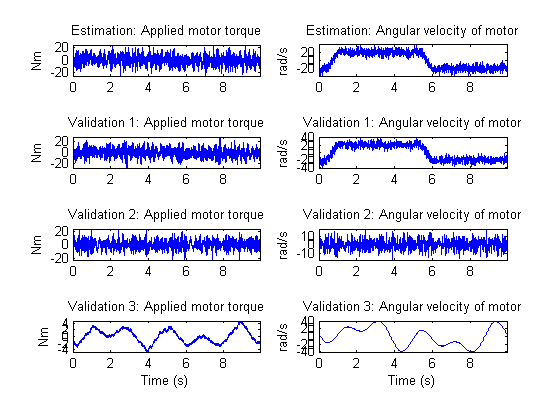
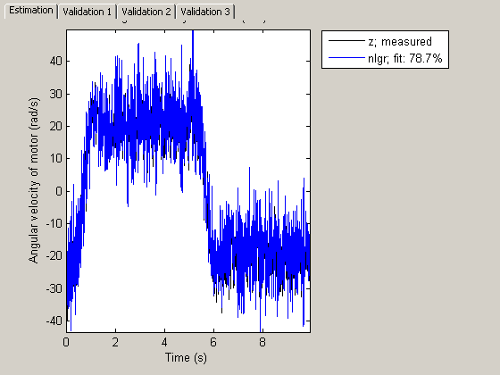
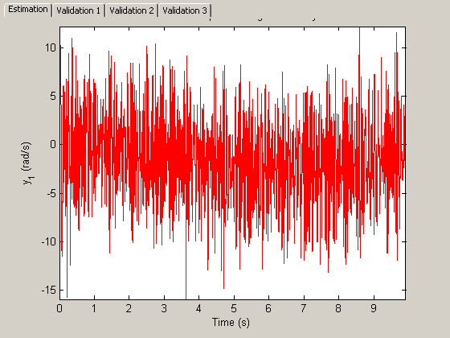
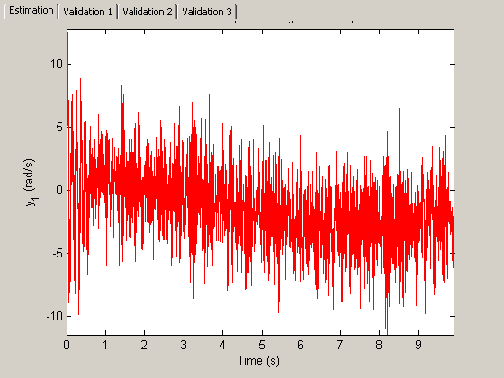

An Industrial Robot Arm
The industrial robot arm investigated in this case study is described by a nonlinear three-mass flexible model according to Figure 1. This model is idealized in the sense that the movements are assumed to be around an axis not affected by gravity. For simplicity, the modeling is also performed with gear ratio r = 1 and the true physical parameters are afterwards obtained through a straightforward scaling with the true gear ratio. The modeling and identification experiments detailed below is based on the work published in
E. Wernholt and S. Gunnarsson. Nonlinear Identification of a Physically Parameterized Robot Model. In preprints of the 14th IFAC Symposium on System Identification, pages 143-148, Newcastle, Australia, March 2006.

Figure 1: Schematic diagram of an industrial robot arm.
Contents
Modeling the Robot Arm
The input to the robot is the applied torque u(t)=tau(t) generated by the electrical motor, and the resulting angular velocity of the motor y(t) = d/dt q_m(t) is the measured output. The angular positions of the masses after the gear-box and at the end of the arm structure, q_g(t) and q_a(t), are non-measurable. Flexibilities within the gear-box is modeled by a nonlinear spring, described by the spring torque tau_s(t), which is located between the motor and the second mass, while the "linear" spring between the last two masses models flexibilities in the arm structure. The friction of the system acts mainly on the first mass and is here modeled by a nonlinear friction torque tau_f(t).
Introducing the states:
( x1(t) ) ( q_m(t) - q_g(t) )
( x2(t) ) ( q_g(t) - q_a(t) )
x(t) = ( x3(t) ) = ( d/dt q_m(t) )
( x4(t) ) ( d/dt q_g(t) )
( x5(t) ) ( d/dt q_a(t) )and applying torque balances for the three masses result in the following nonlinear state-space model structure:
d/dt x1(t) = x3(t) - x4(t) d/dt x2(t) = x4(t) - x5(t) d/dt x3(t) = 1/J_m*(-tau_s(t) - d_g*(x3(t)-x4(t)) - tau_f(t) + u(t)) d/dt x4(t) = 1/J_g*(tau_s(t) + d_g*(x3(t)-x4(t)) - k_a*x2(t) - d_a*(x4(t)-x5(t))) d/dt x5(t) = 1/J_a*(k_a*x2(t) + d_a*(x4(t)-x5(t)))
y(t) = x3(t)
where J_m, J_g, and J_a are the moments of inertia of the motor, the gear-box and the arm structure, respectively, d_g and d_a are damping parameters, and k_a is the stiffness of the arm structure.
The gear-box friction torque, tau_f(t), is modeled to include many of the friction phenomena encountered in practice, among other things so-called Coulomb friction and the Stribeck effect:
tau_f(t) = Fv*x3(t) + (Fc+Fcs*sech(alpha*x3(t)))*tanh(beta*x3(t))
where Fv and Fc are the viscous and the Coulomb friction coefficients, Fcs and alpha are coefficients for reflecting the Striebeck effect, and beta a parameter used to obtain a smooth transition from negative to positive velocities of x3(t). (A similar approach, but based on a slightly different model structure, for describing the static relationship between the velocity and the friction torque/force is further discussed in the tutorial named idnlgreydemo5: "Static Modeling of Friction".)
The torque of the spring, tau_s(t), is assumed to be described by a cubic polynomial without a square term in x1(t):
tau_s(t) = k_g1*x1(t) + k_g3*x1(t)^3
where k_g1 and k_g3 are two stiffness parameters of the gear-box spring.
In other types of identification experiments discussed in the paper by Wernholt and Gunnarsson, it is possible to identify the overall moment of inertia J = J_m+J_g+J_a. With this we can introduce the unknown scaling factors a_m and a_g, and perform the following reparameterizations:
J_m = J*a_m J_g = J*a_g J_a = J*(1-a_m-a_g)
where (if J is known) only a_m and a_g need to be estimated.
All in all, this gives the following state space structure, involving 13 different parameters: Fv, Fc, Fcs, alpha, beta, J, a_m, a_g, k_g1, k_g3, d_g, k_a and d_a. (By definition we have also used the fact that sech(x) = 1/cosh(x).)
tau_f(t) = Fv*x3(t) + (Fc+Fcs/cosh(alpha*x3(t)))*tanh(beta*x3(t))
tau_s(t) = k_g1*x1(t) + k_g3*x1(t)^3d/dt x1(t) = x3(t) - x4(t) d/dt x2(t) = x4(t) - x5(t) d/dt x3(t) = 1/(J*a_m)*(-tau_s(t) - d_g*(x3(t)-x4(t)) - tau_f(t) + u(t)) d/dt x4(t) = 1/(J*a_g)*(tau_s(t) + d_g*(x3(t)-x4(t)) - k_a*x2(t) - d_a*(x4(t)-x5(t))) d/dt x5(t) = 1/(J(1-a_m-a_g))*(k_a*x2(t) + d_a*(x4(t)-x5(t)))
y(t) = x3(t)
IDNLGREY Robot Arm Model Object
The above model structure is entered into a C MEX-file named robotarm_c.c, with state and output update functions as follows (the whole file can be viewed by the command "type robotarm_c.c"). In the state update function, notice that we have here used two intermediate double variables, on one hand to enhance the readability of the equations and on the other hand to improve the execution speed (taus appears twice in the equations, but is only computed once).
/* State equations. */
void compute_dx(double *dx, double *x, double *u, double **p)
{
/* Declaration of model parameters and intermediate variables. */
double *Fv, *Fc, *Fcs, *alpha, *beta, *J, *am, *ag, *kg1, *kg3, *dg, *ka, *da;
double tauf, taus; /* Intermediate variables. */ /* Retrieve model parameters. */
Fv = p[0]; /* Viscous friction coefficient. */
Fc = p[1]; /* Coulomb friction coefficient. */
Fcs = p[2]; /* Striebeck friction coefficient. */
alpha = p[3]; /* Striebeck smoothness coefficient. */
beta = p[4]; /* Friction smoothness coefficient. */
J = p[5]; /* Total moment of inertia. */
am = p[6]; /* Motor moment of inertia scale factor. */
ag = p[7]; /* Gear-box moment of inertia scale factor. */
kg1 = p[8]; /* Gear-box stiffness parameter 1. */
kg3 = p[9]; /* Gear-box stiffness parameter 3. */
dg = p[10]; /* Gear-box damping parameter. */
ka = p[11]; /* Arm structure stiffness parameter. */
da = p[12]; /* Arm structure damping parameter. */ /* Determine intermediate variables. */
/* tauf: Gear friction torque. (sech(x) = 1/cosh(x)! */
/* taus: Spring torque. */
tauf = Fv[0]*x[2]+(Fc[0]+Fcs[0]/(cosh(alpha[0]*x[2])))*tanh(beta[0]*x[2]);
taus = kg1[0]*x[0]+kg3[0]*pow(x[0],3); /* x[0]: Rotational velocity difference between the motor and the gear-box. */
/* x[1]: Rotational velocity difference between the gear-box and the arm. */
/* x[2]: Rotational velocity of the motor. */
/* x[3]: Rotational velocity after the gear-box. */
/* x[4]: Rotational velocity of the robot arm. */
dx[0] = x[2]-x[3];
dx[1] = x[3]-x[4];
dx[2] = 1/(J[0]*am[0])*(-taus-dg[0]*(x[2]-x[3])-tauf+u[0]);
dx[3] = 1/(J[0]*ag[0])*(taus+dg[0]*(x[2]-x[3])-ka[0]*x[1]-da[0]*(x[3]-x[4]));
dx[4] = 1/(J[0]*(1.0-am[0]-ag[0]))*(ka[0]*x[1]+da[0]*(x[3]-x[4]));
} /* Output equation. */
void compute_y(double y[], double x[])
{
/* y[0]: Rotational velocity of the motor. */
y[0] = x[2];
}The next step is to create an IDNLGREY object reflecting the modeling situation. It should here be noted that finding proper initial parameter values for the robot arm requires some additional effort. In the paper by Wernholt and Gunnarsson, this was carried out in two preceding steps, where other model structures and identification techniques were employed. The initial parameter values used below are the results of those identification experiments.
FileName = 'robotarm_c'; % File describing the model structure. Order = [1 1 5]; % Model orders [ny nu nx]. Parameters = [ 0.00986346744839 0.74302635727901 ... 3.98628540790595 3.24015074090438 ... 0.79943497008153 0.03291699877416 ... 0.17910964111956 0.61206166914114 ... 20.59269827430799 0.00000000000000 ... 0.06241814047290 20.23072060978318 ... 0.00987527995798]'; % Initial parameter vector. InitialStates = zeros(5, 1); % Initial states. Ts = 0; % Time-continuous system. nlgr = idnlgrey(FileName, Order, Parameters, InitialStates, Ts, ... 'Name', 'Robot arm', ... 'InputName', 'Applied motor torque', ... 'InputUnit', 'Nm', ... 'OutputName', 'Angular velocity of motor', ... 'OutputUnit', 'rad/s', ... 'TimeUnit', 's');
The names and the units of the states are provided for better bookkeeping:
setinit(nlgr, 'Name', {'Angular position difference between the motor and the gear-box' ... 'Angular position difference between the gear-box and the arm' ... 'Angular velocity of motor' ... 'Angular velocity of gear-box' ... 'Angular velocity of robot arm'}'); setinit(nlgr, 'Unit', {'rad' 'rad' 'rad/s' 'rad/s' 'rad/s'});
The parameter names are also specified in detail. Furthermore, the modeling was done is such a way that all parameters ought to be positive, i.e., the minimum of each parameter should be set to 0 (and hence constrained estimation will later on be performed). As in the paper by Wernholt and Gunnarsson, we also consider the first 6 parameters, i.e., Fv, Fc, Fcs, alpha, beta, and J, to be so good that they do not need to be estimated.
setpar(nlgr, 'Name', {'Fv : Viscous friction coefficient' ... % 1. 'Fc : Coulomb friction coefficient' ... % 2. 'Fcs : Striebeck friction coefficient' ... % 3. 'alpha: Striebeck smoothness coefficient' ... % 4. 'beta : Friction smoothness coefficient' ... % 5. 'J : Total moment of inertia' ... % 6. 'a_m : Motor moment of inertia scale factor' ... % 7. 'a_g : Gear-box moment of inertia scale factor' ... % 8. 'k_g1 : Gear-box stiffness parameter 1' ... % 9. 'k_g3 : Gear-box stiffness parameter 3' ... % 10. 'd_g : Gear-box damping parameter' ... % 11. 'k_a : Arm structure stiffness parameter' ... % 12. 'd_a : Arm structure damping parameter' ... % 13. }); setpar(nlgr, 'Minimum', num2cell(zeros(size(nlgr, 'np'), 1))); % All parameters >= 0! for parno = 1:6 % Fix the first six parameters. nlgr.Parameters(parno).Fixed = true; end
The modeling steps carried out so far have left us with an initial robot arm model with properties as follows:
present(nlgr);
Time-continuous nonlinear state-space model defined by 'robotarm_c' (MEX-file):
dx/dt = F(t, u(t), x(t), p1, ..., p13)
y(t) = H(t, u(t), x(t), p1, ..., p13) + e(t)
with 1 input, 5 states, 1 output, and 7 free parameters (out of 13).
Input:
u(1) Applied motor torque(t) [Nm]
States: initial value
x(1) Angular position difference between the motor and the gear-box(t) [rad] xinit@exp1 0 (fix) in [-Inf, Inf]
x(2) Angular position difference between the gear-box and the arm(t) [rad] xinit@exp1 0 (fix) in [-Inf, Inf]
x(3) Angular velocity of motor(t) [rad/s] xinit@exp1 0 (fix) in [-Inf, Inf]
x(4) Angular velocity of gear-box(t) [rad/s] xinit@exp1 0 (fix) in [-Inf, Inf]
x(5) Angular velocity of robot arm(t) [rad/s] xinit@exp1 0 (fix) in [-Inf, Inf]
Output:
y(1) Angular velocity of motor(t) [rad/s]
Parameters: value
p1 Fv : Viscous friction coefficient 0.00986347 (fix) in [0, Inf]
p2 Fc : Coulomb friction coefficient 0.743026 (fix) in [0, Inf]
p3 Fcs : Striebeck friction coefficient 3.98629 (fix) in [0, Inf]
p4 alpha: Striebeck smoothness coefficient 3.24015 (fix) in [0, Inf]
p5 beta : Friction smoothness coefficient 0.799435 (fix) in [0, Inf]
p6 J : Total moment of inertia 0.032917 (fix) in [0, Inf]
p7 a_m : Motor moment of inertia scale factor 0.17911 (est) in [0, Inf]
p8 a_g : Gear-box moment of inertia scale factor 0.612062 (est) in [0, Inf]
p9 k_g1 : Gear-box stiffness parameter 1 20.5927 (est) in [0, Inf]
p10 k_g3 : Gear-box stiffness parameter 3 0 (est) in [0, Inf]
p11 d_g : Gear-box damping parameter 0.0624181 (est) in [0, Inf]
p12 k_a : Arm structure stiffness parameter 20.2307 (est) in [0, Inf]
p13 d_a : Arm structure damping parameter 0.00987528 (est) in [0, Inf]
Created: 29-Jun-2010 23:26:25
Last modified: 29-Jun-2010 23:26:26
Input-Output Data
A large number of real-world data sets were collected from the experimental robot. In order to keep the robot around its operating point, but also for safety reasons, the data was collected using an experimental feedback control arrangement, which subsequently allows off-line computations of the reference signals for the joint controllers.
In this case study we will limit the onward discussion to four different data sets, one for estimation and the remaining ones for validation purposes. In each case, a periodic excitation signal with approximately 10 seconds duration was employed to generate a reference speed for the controller. The chosen sampling frequency was 2 kHz (sampling period, Ts, = 0.0005 seconds). For the data sets, three different types of input signals were used: (ue: input signal of the estimation data set; uv1, uv2, uv3: input signals of the three validation data sets)
ue, uv1: Multisine signals with a flat amplitude spectrum in the
frequency interval 1-40 Hz with a peak value of 16 rad/s. The
multisine signal is superimposed on a filtered square wave
with amplitude 20 rad/s and cut-off frequency 1 Hz.uv2: Similar to ue and uv1, but without the square wave.
uv3: Multisine signal (sum of sinusoids) with frequencies 0.1,
0.3, and 0.5 Hz, with peak value 40 rad/s.Let us load the available data and put all four data sets into one single IDDATA object z:
load(fullfile(matlabroot, 'toolbox', 'ident', 'iddemos', 'data', 'robotarmdata')); z = iddata({ye yv1 yv2 yv3}, {ue uv1 uv2 uv3}, 0.5e-3, 'Name', 'Robot arm'); set(z, 'InputName', 'Applied motor torque', 'InputUnit', 'Nm'); set(z, 'OutputName', 'Angular velocity of motor', 'OutputUnit', 'rad/s'); set(z, 'ExperimentName', {'Estimation' 'Validation 1' 'Validation 2' 'Validation 3'}); set(z, 'Tstart', 0, 'TimeUnit', 's'); present(z);
Time domain data set containing 4 experiments.
Experiment Samples Sampling Interval
Estimation 19838 0.0005
Validation 1 19838 0.0005
Validation 2 19838 0.0005
Validation 3 19838 0.0005
Outputs Unit (if specified)
Angular velocity of motor rad/s
Inputs Unit (if specified)
Applied motor torque Nm
The following figure shows the input-output data used in the four experiments.
figure('Name', [z.Name ': input-output data']); for i = 1:z.Ne zi = getexp(z, i); subplot(z.Ne, 2, 2*i-1); % Input. plot(zi(:, [], 1)); title([z.ExperimentName{i} ': ' zi.InputName{1}]); if (i < z.Ne) xlabel(''); else xlabel([z.Domain ' (' zi.TimeUnit ')']); end axis('tight'); subplot(z.Ne, 2, 2*i); % Output. plot(zi(:, 1, [])); title([z.ExperimentName{i} ': ' zi.OutputName{1}]); if (i < z.Ne) xlabel(''); else xlabel([z.Domain ' (' zi.TimeUnit ')']); end axis('tight'); end
Figure 2: Measured input-output data of an experimental robot arm.
Performance of the Initial Robot Arm Model
How good is the initial robot arm model? Let us use COMPARE to simulate the model outputs (for all four experiments) and compare the result with the corresponding measured outputs. For all four experiments, we know that the values of the first two states are 0 (fixed), while the values of the remaining three states are initially set to the measured output at the starting time (non-fixed). However, by default COMPARE estimates all initial states, and with z holding four different experiments this would mean 4*5 = 20 initial states to estimate. Even after fixing the first two states, 4*3 = 12 initial states would remain to estimate (in case the internal model initial state strategy is followed). Because the data set is rather large, this would result in lengthy computations, and to avoid this we estimate the 4*3 free components of the initial states using PREDICT (possible if the initial state is passed as an initial state structure), but restrict the estimation to the first 10:th of the available data. We then instruct COMPARE to use the resulting 5-by-4 initial state matrix X0init without performing any initial state estimation.
zred = z(1:round(zi.N/10)); setinit(nlgr, 'Fixed', {true true false false false}); X0 = nlgr.InitialStates; [X0.Value] = deal(zeros(1, 4), zeros(1, 4), [ye(1) yv1(1) yv2(1) yv3(1)], ... [ye(1) yv1(1) yv2(1) yv3(1)], [ye(1) yv1(1) yv2(1) yv3(1)]); [yp, X0init] = predict(zred, nlgr, [], X0); setinit(nlgr, 'Value', num2cell(X0init(:, 1))); figure; compare(z, nlgr, [], 'Init', X0init);
Figure 3: Comparison between measured outputs and the simulated outputs of the initial robot arm model.
As can be seen, the performance of the initial robot arm model is decent or quite good. The fit for the three types of data sets are around 79% for ye and yv1, 37% for yv2, and 95% for yv3. Notice that the higher fit for ye/yv1 as compared to yv2 is in large due to the initial model's ability to capture the square wave, while the multisine part is not captured equally well. We can also look at the prediction errors for the four experiments:
figure; pe(z, nlgr, X0init);
Figure 4: Prediction errors of the initial robot arm model.
Parameter Estimation
Let us now try to improve the performance of the initial robot arm model by estimating the 7 free model parameters and the 3 free initial states of the first experiment of z (the estimation data set). This estimation will take some time (typically a couple of minutes).
nlgr = pem(nlgr, getexp(z, 1), 'Display', 'Full');
Criterion: Trace minimization
Scheme: Trust-Region Reflective Newton (LSQNONLIN, LargeScale = 'On')
--------------------------------------------------------------
Norm of First-order
Iteration Cost step optimality
--------------------------------------------------------------
0 19.7072 - -
1 10.5099 2.04 7.13e+005
2 9.91947 11.7 2.68e+005
3 9.70357 2.26 1e+005
4 9.61001 1.92 5.79e+004
5 9.52668 6.35 2.83e+004
6 9.49403 1.4 1.22e+005
7 9.47358 1.39 2.33e+004
8 9.46997 0.553 2.25e+004
9 9.46929 0.348 5.79e+003
10 9.46928 0.109 3.94e+003
11 9.46928 0.0273 3.94e+003
12 9.46928 0.00684 3.94e+003
13 9.46928 0.00171 2.44e+003
--------------------------------------------------------------
Performance of the Estimated Robot Arm Model
COMPARE is again used to assess the performance of the estimated robot arm model. We also here instruct COMPARE to not perform any initial state estimation. For the first experiment we replace the guessed initial state with the one estimated by PEM and for the remaining three experiments we employ PREDICT to estimate the initial state based on the reduced IDDATA object zred.
X0init(:, 1) = cell2mat(getinit(nlgr, 'Value')); X0 = nlgr.InitialStates; [X0.Value] = deal(zeros(1, 3), zeros(1, 3), [yv1(1) yv2(1) yv3(1)], ... [yv1(1) yv2(1) yv3(1)], [yv1(1) yv2(1) yv3(1)]); [yp, X0init(:, 2:4)] = predict(getexp(zred, 2:4), nlgr, [], X0); figure; compare(z, nlgr, [], 'Init', X0init);

Figure 5: Comparison between measured outputs and the simulated outputs of the estimated robot arm model.
The comparison plot shows an improvement in terms of better fits. For ye and yv1 the fit is now around 85% (before: 79%), for yv2 around 63% (before: 37%), and for yv3 somewhat less than 95.5% (before: also little less than 95.5%). The improvement is most pronounced for the second validation data set, where a multisine signal without any square wave was applied as the input. However, the estimated model's ability to follow the multisine part of ye and yv1 has also been improved considerably (yet this is not reflected by the fit figures, as these are more influenced by the fit to the square wave). A plot of the prediction errors also reveals that the residuals are now in general smaller than with the initial robot arm model:
figure; pe(z, nlgr, X0init);
Figure 6: Prediction errors of the estimated robot arm model.
We conclude the case study by textually summarizing various properties of the estimated robot arm model.
present(nlgr);
Time-continuous nonlinear state-space model defined by 'robotarm_c' (MEX-file):
dx/dt = F(t, u(t), x(t), p1, ..., p13)
y(t) = H(t, u(t), x(t), p1, ..., p13) + e(t)
with 1 input, 5 states, 1 output, and 7 free parameters (out of 13).
Input:
u(1) Applied motor torque(t) [Nm]
States: initial value
x(1) Angular position difference between the motor and the gear-box(t) [rad] xinit@exp1 0 (fix) in [-Inf, Inf]
x(2) Angular position difference between the gear-box and the arm(t) [rad] xinit@exp1 0 (fix) in [-Inf, Inf]
x(3) Angular velocity of motor(t) [rad/s] xinit@exp1 -19.0039 (est) in [-Inf, Inf]
x(4) Angular velocity of gear-box(t) [rad/s] xinit@exp1 -22.2336 (est) in [-Inf, Inf]
x(5) Angular velocity of robot arm(t) [rad/s] xinit@exp1 -23.3743 (est) in [-Inf, Inf]
Output:
y(1) Angular velocity of motor(t) [rad/s]
Parameters: value standard dev
p1 Fv : Viscous friction coefficient 0.00986347 0 (fix) in [0, Inf]
p2 Fc : Coulomb friction coefficient 0.743026 0 (fix) in [0, Inf]
p3 Fcs : Striebeck friction coefficient 3.98629 0 (fix) in [0, Inf]
p4 alpha: Striebeck smoothness coefficient 3.24015 0 (fix) in [0, Inf]
p5 beta : Friction smoothness coefficient 0.799435 0 (fix) in [0, Inf]
p6 J : Total moment of inertia 0.032917 0 (fix) in [0, Inf]
p7 a_m : Motor moment of inertia scale factor 0.266389 0.000285897 (est) in [0, Inf]
p8 a_g : Gear-box moment of inertia scale factor 0.647376 0.000194157 (est) in [0, Inf]
p9 k_g1 : Gear-box stiffness parameter 1 20.0977 0.0254397 (est) in [0, Inf]
p10 k_g3 : Gear-box stiffness parameter 3 23.9971 0.331938 (est) in [0, Inf]
p11 d_g : Gear-box damping parameter 0.0308412 0.000283045 (est) in [0, Inf]
p12 k_a : Arm structure stiffness parameter 11.7826 0.0311826 (est) in [0, Inf]
p13 d_a : Arm structure damping parameter 0.00285079 8.04029e-005 (est) in [0, Inf]
The model was estimated from the data set 'Robot arm', which
contains 19838 data samples.
Loss function 9.46928 and Akaike's FPE 9.47596
Created: 29-Jun-2010 23:26:25
Last modified: 29-Jun-2010 23:30:19
Concluding Remarks
System identification techniques are widely used in robotics. "Good" robot models are vital for modern robot control concepts, and are often considered as a necessity for meeting the continuously increasing demand in speed and precision. The models are also crucial components in various robot diagnosis applications, where the models are used for predicting problems related to wear and for detecting the actual cause of a robot malfunction.
Additional Information
For more information on identification of dynamic systems with System Identification Toolbox™ visit the System Identification Toolbox product information page.